Заклад дошкільної освіти №30 «Волошка» загального
розвитку, що знаходиться у комунальній власності
Адреса:вул. Пилипа Орлика, 8;
Переглянути на карті
Номера телефонів:
03244 20104
Тип садочку:
/Державний
Вовканич Марія Іванівна
E-mail: drogobych_vo.dnz30@ukr.net
Дрогобич
(1 відгуки)
Заклад побудований у 1864 році, як лікарня для євреї. Історична пам’ятка
місцевого значення.З 30.01.1977 року почав працювати як ясла-садок. Проектна
потужність – 80 місць, групи комплектуються за віковими ознакам. У закладі
освіти функціонує 5 груп загального розвитку. Станом на 01.12.2021 рік у ЗДО №30
навчається 139 дітей
Дошкільний навчальний заклад №2 «Калинонька»,
комбінованого типу, що знаходяться у комунальній власності
Адреса:вул. Богдана Лепкого, 29, 82100;
Переглянути на карті
Номера телефонів:
(03244) 21753
Тип садочку:
/Державний
Янишин Лілія Миронівна
E-mail: drogobych_vo.dnz2@ukr.net
Дрогобич
(5 відгуки)
ЗДО №2, тип закладу – ясла-садок. Заклад розрахований на 220 місць. Функціонує
12 вікових груп з них 8 груп загального розвитку та 4 інклюзивні групи
(кількість інклюзивних
груп визначається засновником або уповноваженим
органом, за наявності дітей з особливими освітніми потребами та відповідним
висновком ІРЦ).
ЗДО працює за п’ятиденним робочим тижнем з 8.00 до 18.30 (10,5год.)інклюзивні
групи працюють
з 8.30-17.30 (9год)Вихідні дні – субота, неділя, святкові, неробочі дні.
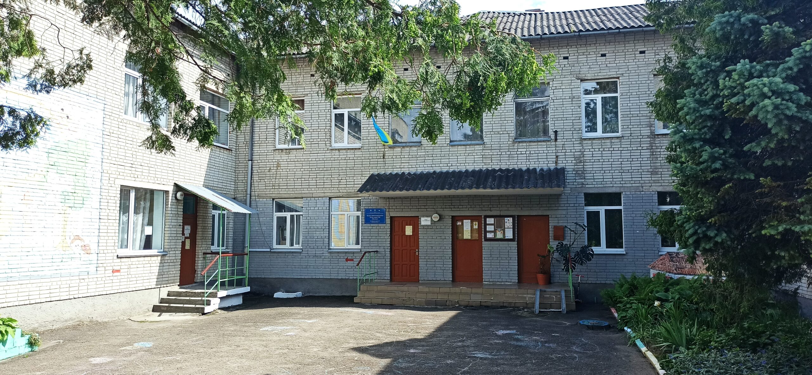
Заклад дошкільної освіти №6 «Веселка» загального розвитку
комунальної власності
Адреса:вул.Грушевського, 62 ;
Переглянути на карті
Номера телефонів:
(03244) 24350
Тип садочку:
/Державний
Паньків Наталія Ярославівна
drogobych_vo.dnz6@ukr.net
Дрогобич
(4 відгуки)
ЗДО №6 налічує 12 вікових груп та розрахований на 220 дітей. Основний напрямок –
фізкультурно-оздоровча робота. Діють гуртки: платний – з англійської мови,
безкоштовні – “Умілі рученята”, “Здоров’ячок”, “Срібні дзвіночки”.
ЗДО №11 «Світлячок» заснований у 1979 році, з 1996 року переданий на баланс
відділу освіти. Це ясла-садок на 169 місць. У 2021-2022 н. р. працює 10 груп: 9
загального розвитку (2 раннього віку, 7 передшкільного) та 1 інклюзивна. Графік
роботи: 8:00 – 18:30.
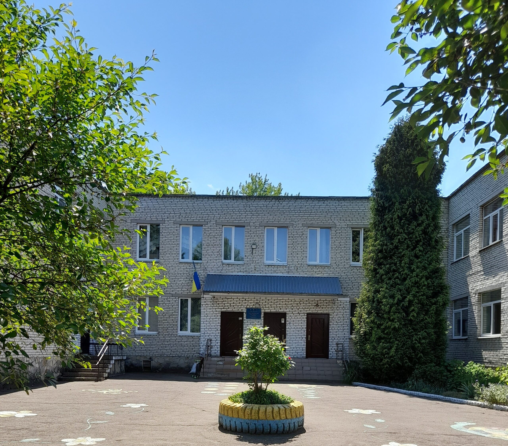
Заклад дошкільної освіти №11 «Світлячок» загального
розвитку, що знаходиться у комунальній власності
Адреса:вул. Зварицька, буд. 75, корп. 1
Переглянути на карті
Номера телефонів:
(03244) 20624
Тип садочку:
/Державний
Цінцірук Леся Миколаївна
drogobych_vo.dnz11@ukr.net
Дрогобич
(6 відгуки)
Заклад дошкільної освіти №11 «Світлячок» м. Дрогобич заснований у 1979 році
нафтопереробним заводом. У 1996 році переданий на баланс відділу освіти
міськвиконкому.
Тип закладу – ясла-садок, розрахований на 169 місць. Функціонує 9 груп
загального розвитку (2 – раннього віку, 7 – передшкільного) та 1 інклюзивна.
Графік роботи: 8:00 – 18:30.
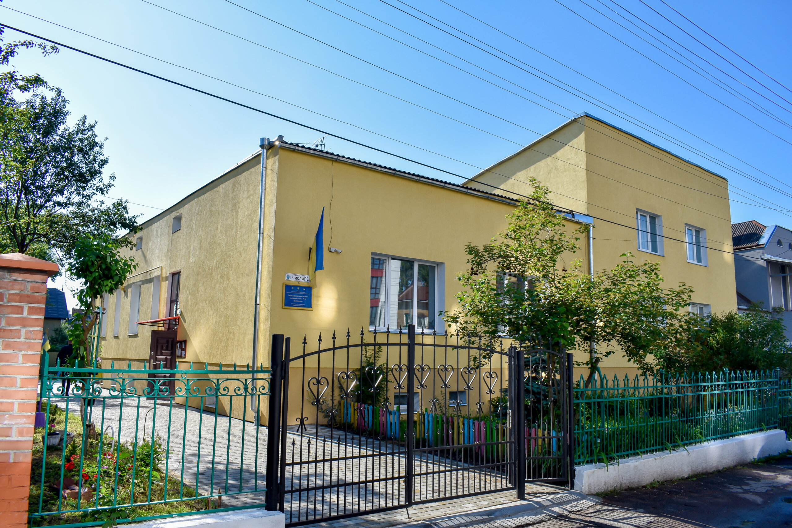
Заклад дошкільної освіти №12 «Дзвіночок» загального
розвитку, що знаходиться у комунальній власності
Адреса:вул. Чмоли, буд. 10 ;
Переглянути на карті
Номера телефонів:
(03244) 23392
Тип садочку:
/Державний
Токарська Марія Стефанівна
drogobych_vo.dnz12@ukr.net
Дрогобич
(10 відгуки)
ЗДО №12 “Дзвіночок” заснований рішенням Дрогобицької міської ради №326 від
24.10.1956. Тип – дитячий садок, мова навчання – українська.
Мета закладу – забезпечення дошкільної освіти, догляд, оздоровлення, розвиток та
соціальна адаптація дітей. Освітній процес здійснюється за програмою “Українське
дошкілля”.
Заклад розрахований на 55 місць, працюють 7 педагогів (2 – вища категорія, 4 – І
категорія, 1 – спеціаліст). Функціонує 3 групи загального розвитку: молодша,
середня, старша.
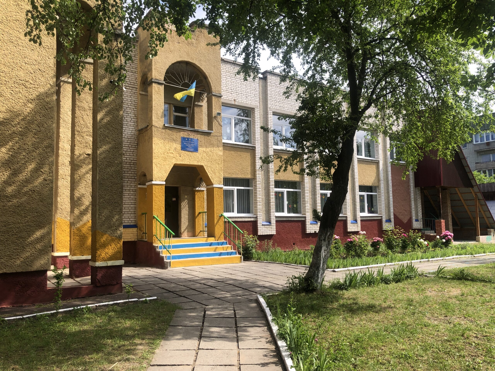
Заклад дошкільної освіти №13 «Казка» комбінованого типу
комунальної власності
Адреса:вул. Володимира Великого, буд. 25;
Переглянути на карті
Номера телефонів:
(03244) 37734
Тип садочку:
/Державний
Фідик Ірина Дмитрівна
drogobych_vo.dnz13@ukr.net
Дрогобич
(7 відгуки)
ЗДО №13 створено на підставі наказу №70 від 1982р. В ЗДО функціонують 11 груп. З
них 3 групи інклюзивні.
ЗДО відвідують 250 дітей. П’ятиденний робочий тиждень, графік роботи з 8.00 до
18.30 (8 груп працюють з 8.30 до 17.30, 3 групи з 8.00 до 18.30)
Кількість персоналу – 63 (33 – педагогічні працівники, 30 – обслуговуючий
персонал).
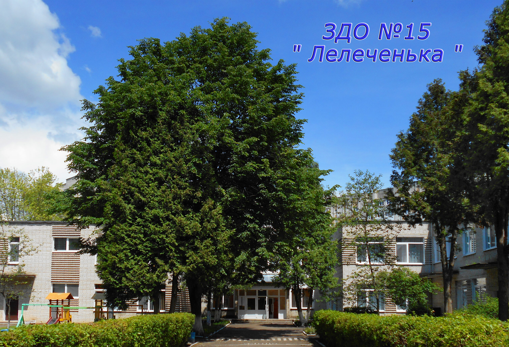
Дошкільний навчальний заклад №15 «Лелеченька» загального
розвитку комунальної власності
Адреса:вул. Самбірська, буд. 66;
Переглянути на карті
Номера телефонів:
(03244) 413416
Тип садочку:
/Державний
Ковалик Ганна Федорівна
drogobych_vo.dnz15@ukr.net
Дрогобич
(7 відгуки)
ЗДО №6 налічує 12 вікових груп та розрахований на 220 дітей. Основний напрямок –
фізкультурно-оздоровча робота. Діють гуртки: платний – з англійської мови,
безкоштовні – “Умілі рученята”, “Здоров’ячок”, “Срібні дзвіночки”.
ЗДО №11 «Світлячок» заснований у 1979 році, з 1996 року переданий на баланс
відділу освіти. Це ясла-садок на 169 місць. У 2021-2022 н. р. працює 10 груп: 9
загального розвитку (2 раннього віку, 7 передшкільного) та 1 інклюзивна. Графік
роботи: 8:00 – 18:30.
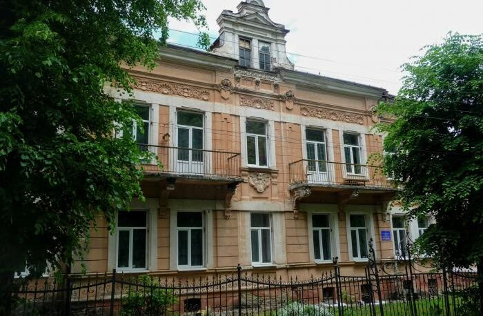
Дошкільний навчальний заклад №19 «Полуничка» санаторного
типу комунальної власності
Адреса:вул. Івана Франка, буд. 12;
Переглянути на карті
Номера телефонів:
(03244) 22139
Тип садочку:
/Державний
Коваль Ольга Степанівна
drogobych_vo.dnz19@ukr.net
Дрогобич
(3 відгуки)
ЗДО розташований у пристосованому приміщенні, працює за п’ятиденним графіком з
8:00 до 18:30.
Проєктна потужність – 4 групи (1 раннього віку, 3 дошкільного), розрахований на
85 місць. Дві групи – для дітей з ранніми проявами тубінфекції, дві – з
неспецифічними захворюваннями органів дихання. Відвідують 90 дітей.
Персонал – 27 працівників (14 педагогів, 13 обслуговуючого персоналу).
Діяльність спрямована на збереження здоров’я дітей, розвиток особистості та
творчих здібностей, соціальну адаптацію та підготовку до навчання.
Дошкільний навчальний заклад №20 «Верховинка»
Адреса:вул. Володимира Великого, буд. 60;
Переглянути на карті
Номера телефонів:
(03244) 20284
Тип садочку:
/Державний
Недбальська Ярослава Василівна
drogobych_vo.dnz19@ukr.net
Дрогобич
(5 відгуки)
Заклад дошкільної освіти має 155 місць та 8 груп загального розвитку.
Наповнюваність груп: ясельна – 15 дітей, дошкільна – 20 дітей. Заклад працює 5
днів на тиждень з 8:00 до 18:30, вихідні – субота, неділя та святкові дні.
Навчальний рік триває з 1 вересня по 31 травня, з 1 червня до 31 серпня –
оздоровлення дітей. Харчування трьохразове. Фінансування забезпечується коштами
відділу освіти, бюджетів, батьків та добровільними внесками. Контроль за
діяльністю здійснюється через державну атестацію.
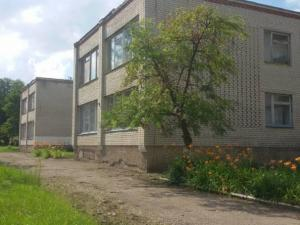
Заклад дошкільної освіти №24 «Смерічка» загального
розвитку, що знаходиться в комунальній власності
Адреса:вул.Грушевського, буд. 121;
Переглянути на карті
Номера телефонів:
(03244) 20414
Тип садочку:
/Державний
Буняк Ганна Василівна
drogobych_vo.dnz24@ukr.net
Дрогобич
(8 відгуки)
Заклад розрахований на 115 місць.
У ЗДО функціонують 6 груп загального розвитку.
3 групи – 10.5 год.
3 групи – 9 год.
Загальна кількість дітей в ЗДО – 123.
Тут працюють 29 працівників, з них 14 педагогів
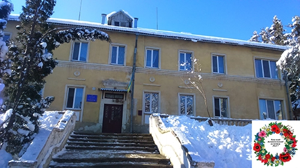
Заклад дошкільної освіти(ясла-садок) №27 «Віночок»
Дрогобицької міської ради Львівської області
Адреса:вул.Чорновола, буд. 17;
Переглянути на карті
Номера телефонів:
(03244) 21692
Тип садочку:
/Державний
Шлярп Ірина Романівна
drogobych_vo.dnz27@ukr.net
Дрогобич
(5 відгуки)
В закладі функціонує 4 групи, з них одна інклюзивна. Налічується 72 дітей.
Працює 24 працівники, з них 13 педпрацівників (12 з вищою педагогічною освітою
та 2-з базовою освітою). За кваліфікацією: 6 педпрацівників-вища категорія, 4-І
категорія, 1- ІІ категорія, 2-спеціалісти
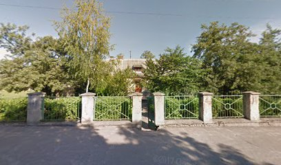
Заклад дошкільної освіти (дитячий садок) № 28 «Берізка»
Дрогобицької міської ради Львівської області
Адреса:вул.Бориславська, буд. 28;
Переглянути на карті
Номера телефонів:
(03244) 21340
Тип садочку:
/Державний
Бащук Галина Мирославівна
drogobych_vo.dnz28@ukr.net
Дрогобич
(2 відгуки)
Засновано в жовтні 1953 року. Форма власності- комунальна.Функціонує три вікові
групи (молодша, середня, старша). Загальна кількість дітей – 55. Кількість
працівників -17, в тому числі педагогів -8. Загальна площа приміщень – 589 м2.
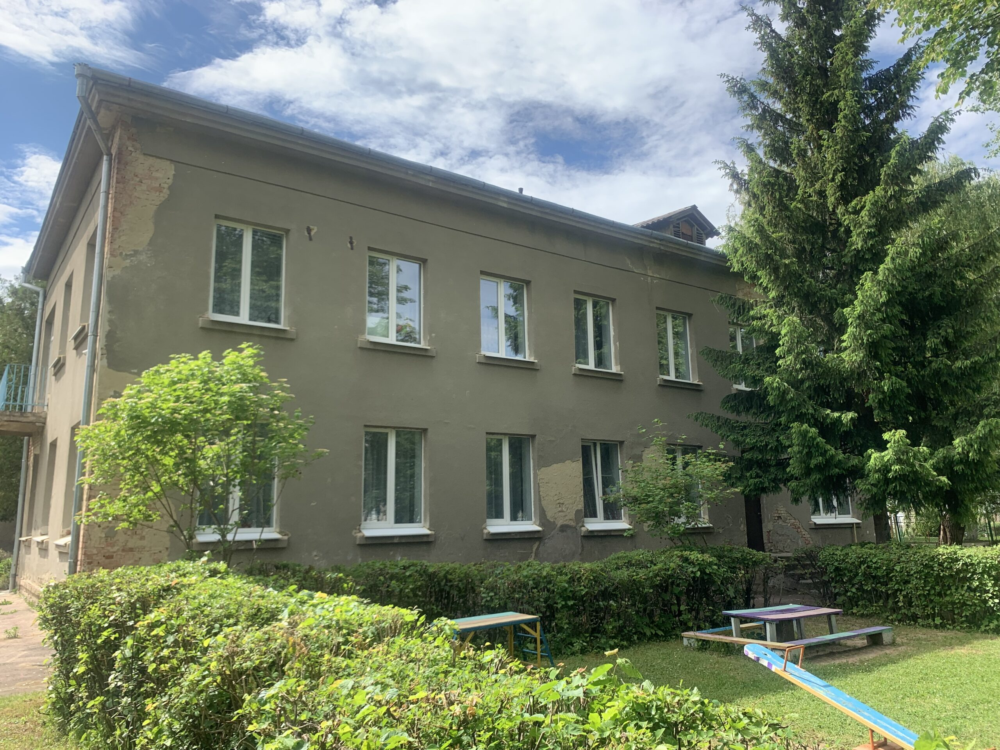
Заклад дошкільної освіти (ясла – садок) № 29 «Дюймовочка»
комбінованого типу, що знаходиться у комунальній власності Дрогобицької міської
ради Львівської області
Адреса:вул.Володимира Великого, буд.76;
Переглянути на карті
Номера телефонів:
Тип садочку:
/Державний
Лапчук Наталія Омелянівна
drogobych_vo.dnz29@ukr.net
Дрогобич
(7 відгуки)
(Ясла – садок) комбін. типу ДМР Інд .код 23891272
В закладі – 6 груп :4 інкл. групи, 2 заг. розвитку,
: 95 дітей з них 11 з особ. осв. потребами, 35 прац.- 21 педагог з них 1-керів.,
1-вих. мет., 13 – вихователів,
2 – музкер., 1- псих., 3 – асис. вихов.,
14 – тех. персонал
( ваканція -1 асис. Вих.).
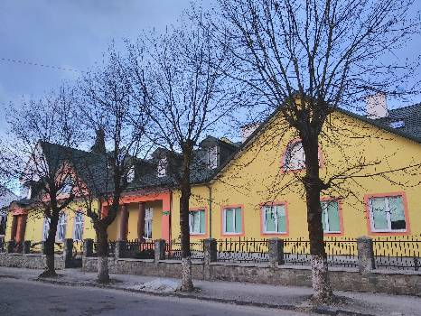
Благодійний греко-католицький дитячий садок ”Ангелятко”
Адреса:вул.Івана Козловського, буд.57;
Переглянути на карті
Номера телефонів:
(03244)38312
Тип садочку:
/Приватна форма власності